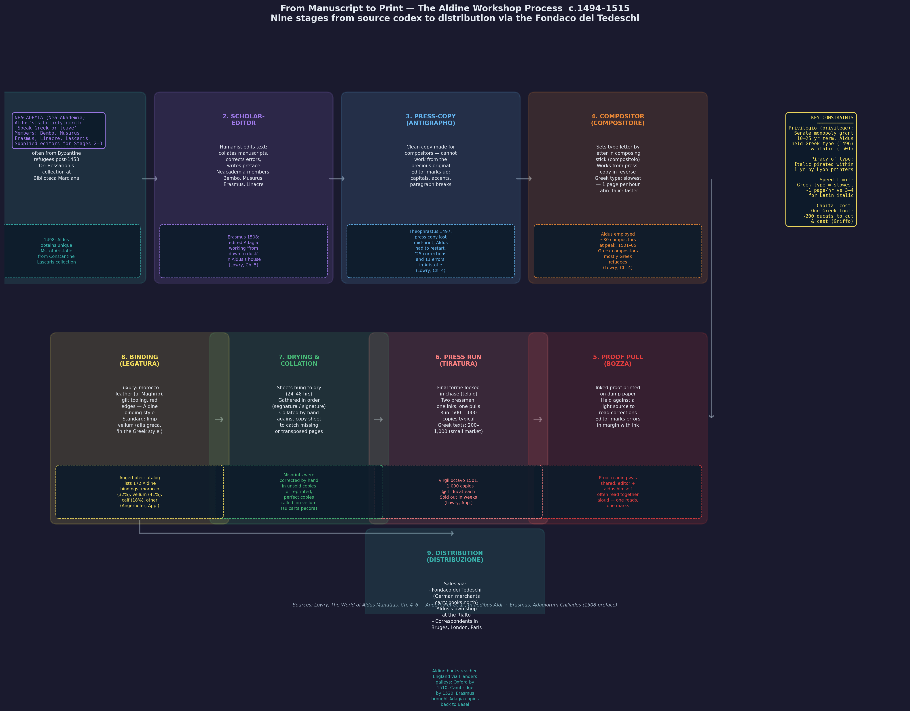

From Manuscript to Print in Renaissance Venice
Venice was the printing capital of Renaissance Europe. Between 1469 and 1500, roughly 150 Venetian presses turned out over 4,000 editions — nearly twice the production of the city’s nearest rival, Paris, and between a seventh and an eighth of the total output of Europe’s presses during the same period (Lowry, p. 20). The transformation from scribal manuscript production to mechanical print was not a clean break but a gradual, often chaotic transition in which scribes became printers, manuscripts became press-copy, and a new industry was born from the collision of humanist scholarship, commercial capital, and German technical expertise.
This page traces the full process chain: how a Greek manuscript in the collection of a Venetian noble or a refugee cardinal was transformed into a printed octavo volume bound in morocco and shipped to the Frankfurt fair, and how the industry that made this possible remade the intellectual life of Europe.

Nine-stage process flow through the Aldine workshop c.1494–1515: source manuscript → scholar-editor (Neacademia) → press-copy (antigrapho) → compositor → proof pull (bozza) → press run (tiratura) → drying and collation → binding (legatura) → distribution via the Fondaco dei Tedeschi. Historical figures and documented incidents annotated at each stage.
The Manuscript Economy Before Print
Before the arrival of printing, Venice was already a major centre of manuscript production. The city’s position as the gateway between Latin Europe and the Greek East gave it unique access to texts that were scarce or unknown in the West. Greek manuscripts arrived with refugees after the fall of Constantinople, with merchants returning from Byzantine trading posts, and through the networks of humanist collectors like Cardinal Bessarion, Francesco Barbaro, and Bernardo Bembo.
Scribes (copisti or amanuenses) produced manuscripts on commission or for the open market. A scribe like Zacharias Callierges operated a scriptorium that copied Greek texts for the Venetian and Paduan scholarly market. The trade was flexible: Callierges later became a printer, and when printing did not bring sufficient returns, became a scribe again — illustrating the fluid boundary between the two worlds (Lowry, p. 26). Private libraries circulated their holdings among scholars through what was effectively a lending network, as Gerolamo da Molin operated in the 1450s with “a brisk circulation of literary, religious and philosophical texts among his fellow-patricians” (Lowry, p. 253).
The manuscript market was exceptionally rich. Bernardo Bembo owned a fourth-century Terence, a ninth-century Lombardic codex of Virgil, and autographs of fifteenth-century Florentine writers. Giorgio Valla’s library held the Greek mathematical writer Heron. The Barbaro family manuscripts, including a manuscript of Aristophanes used by Marcus Musurus for the Aldine edition, were passed down through generations. These private libraries were, by a curious paradox, more accessible to scholars than the public Marciana (Lowry, pp. 252-253).
Printing Arrives: The 1469 Monopoly and the 1473 Crash
Printing came to Venice through a German immigrant. On 18 September 1469, John of Speyer was granted a five-year monopoly over the craft of printing, which he had recently pioneered in the Republic (Lowry, p. 19). Such petitions were common in Venice — covering everything from improved windmills to experiments with poison-gas — and were normally treated with polite encouragement. Few came to anything. John’s petition can hardly have been more than a small item of extra business; there was little to show that the craft would transform the city more radically than the Ottoman conquest of Constantinople (Lowry, p. 20).
John of Speyer died within months of gaining the monopoly. His brother Windelin continued the work, but the privilege died with its original holder, and competitors soon thrust themselves forward. By 1473 or 1474, a disgruntled scribe complained that the city was “stuffed with books” — and he was perfectly right. Since the beginning of the decade, 176 different editions had been published. By the end of the decade, the figure would reach 593. By the end of the century, roughly 150 Venetian presses had turned out over 4,000 editions (Lowry, p. 20).
The uncontrolled enthusiasm for classical revival editions in the early 1470s deluged the Italian market with more editions of the Latin classics than it could absorb, leaving printers with unsold copies and unpaid creditors. The Venetian industry reeled, its output declining by sixty-five per cent in 1473. In Rome, the printers Sweynheim and Pannartz — who claimed to have printed 20,475 copies of their various editions — appealed to the Pope through their editor Gianandrea de Bussi, reporting that the workshop was “full of printed sheets, empty of necessities.” Even a timely grant of benefices did not save the partnership (Lowry, pp. 26-27).
The lessons of the crash were harsh but clear. The surviving printers consolidated their credit structures, sought to exploit special fields as their own, and avoided unnecessary competition. The development of international book-fairs at Frankfurt and Lyons provided more detailed information about production in different centres, and business methods became more refined and subtle (Lowry, p. 27).
The Business of Printing: Craftsmen and Entrepreneurs
Lane identifies two distinct models in the early printing industry (Lane, pp. 336-337).
The craftsman-printer knew the technique Gutenberg had introduced and had the skill to cut punches — the most essential element in their capital equipment. Nicolas Jensen had been an apprentice in the Paris mint before he went to Cologne to learn the secrets of printing. Both he and John of Speyer were admired for the handsome type that came from the punches they cut. Presses were not in themselves expensive. Even when supplemented with a font or two of type, the equipment of a printer represented a capital investment hardly larger than the cost of paper for one book. But capital was needed to pay workmen, buy paper and ink, and build up a large stock of books in transit to the many centres that had to be reached if a large edition was to be sold. Almost as soon as his printing was under way, Jensen formed partnerships that supplied capital and aided his marketing (Lane, p. 336).
The publisher-entrepreneur did not begin as a craftsman but as a man of means who became a bookseller and publisher. He decided what to publish, contracted with craftsmen to cut punches, cast and set type, and operate presses. He supplied the paper and relatively prompt pay while seeking out markets. The outstanding example was Andrea Torresano, the father-in-law of Aldus Manutius, who opened a book store, acquired Jensen’s type punches, and showed a willingness to share entrepreneurial initiative by making Aldus his chief editor (Lane, pp. 336-337).
The Torresano-Aldus partnership was by far the largest private industrial establishment in Venice in terms of the number of men at one centre under one management — over thirty persons brought together in a single workshop. Besides the usual compositors and pressmen and their apprentices, they hired specialists: the punchcutter Francesco Griffo, copyreaders including Erasmus, and a range of other experts. The building of a palace or a big ship might bring more workmen together, but only for a short time (Lane, p. 337). Only the state-operated Arsenal, Mint, and Tana rope factory were larger.
The Privilege System: Early Copyright
Printing required a much larger investment than manuscript production, and printers sought legal protection against competitors who might reprint their texts without bearing the initial cost. The response was the petition for privilege — the Renaissance precursor to copyright. Petitions punctuate the records of all the main bodies in the Venetian state, covering every subject from improved windmills to poison-gas experiments, and were normally treated with polite encouragement. Few came to anything (Lowry, p. 19).
John of Speyer’s monopoly was the first privilege for printing in Venice, but it died with him. By the 1490s, the petitions reveal a much more complex and anxious industry. They conjure up pictures of “a sinister underground at work within the industry: its agents sniff out any new and important work which is in preparation, bribe some disaffected worker, and secure a copy; secret presses mass-produce the stolen text; a cheap version appears on the market before the original, and the poor printer who has invested his money and expertise in the project is left destitute” (Lowry, p. 27). These accounts are probably over-dramatised, but the problem of plagiarism troubled Aldus continually.
Aldus applied for copyright protection in 1496, seeking to protect his company’s huge investment in his Greek type and italic cursive. His petition outlawed all imitation of his Greek and italic styles. This was a landmark in printing history, but it also created a conflict with Francesco Griffo, the punchcutter who had actually designed the types. Aldus was effectively preventing Griffo from selling his most original and fashionable designs to other printers — and it is not surprising that they quarrelled (Lowry, p. 111).
The clumsy system of press-privileges sought only to protect the interests of the investor, which always meant the printer or publisher. The scribe who had designed the type, the type-cutter who had executed it, and the scholar who had prepared the text were all unprotected. It would take centuries for copyright to become a tool for creators rather than investors.
The Editorial Process: From Manuscript to Press-Copy
The transformation of a manuscript into a printed edition passed through several stages, and the process was far from the systematic, scholarly ideal that later generations imagined.
Sourcing Manuscripts
For his Greek editions, Aldus had no special access to the Marciana library. He had to rely on the open market and his personal network. The Venetian manuscript market was exceptionally rich — private libraries like those of Bernardo Bembo, the Barbaro family, and Giorgio Valla offered material of comparable quality to the Marciana — and Aldus’s high social connections enabled him to exploit it at every level (Lowry, p. 252).
Sometimes the manuscripts came through learned contacts. When preparing the edition of Bessarion’s In Calumniatorem Platonis, Aldus claimed to have had an autograph manuscript brought to him. Marcus Musurus, the Cretan scholar who edited the Aldine Aristophanes in 1498, used a manuscript that had once belonged to Francesco Barbaro and was passed down to his descendants. Niccolo Leoniceno lent Aldus his own manuscript of Theophrastus — which proved to be a “single, mutilated exemplar” lacking the end of one work (Lowry, pp. 251-256).
The Press-Copy
Eleven press-copy manuscripts have survived from the Aldine workshop — manuscripts bearing the page-markings, corrections, smudges, and finger-marks that reveal they were used by the compositors to set up the text. They account for less than a tenth of Aldus’s output, and several are no more than bundles of fragments that were “passed to the printers to be ripped apart, and to die like vipers in the act of birth” — the fate Aldus considered normal for an exemplar (Lowry, p. 254).
The surviving press-copies span twenty years of Aldus’s career, from the first volume of Aristotle (1495) to the Hesychius of 1514. They supply three vital clues: the quality of the material Aldus had at his disposal, the philological skills of his editors, and the faithfulness with which corrections in the manuscript were transmitted through the compositors onto the page.
Collation and Correction
The editorial method was often haphazard. For the Aristotle edition of 1497, Aldus’s main source was a manuscript copied around 1450-69, recently made, but derived from the oldest known manuscript of the work — the thirteenth-century Marcianus Graecus 208, which must still have been in Bessarion’s possession when the copy was taken. Corrections were introduced from two other sources. Altogether, the assessment is very evenly balanced: Aldus had some good material, and he tried to establish the correct tradition by comparing different witnesses. But when we descend to details, his methods and those of his collaborators still seem very arbitrary. In a four-page section of the printed text, Sicherl’s analysis shows that the Aldine editors corrected their press-copy at proof stage on twenty-five occasions and introduced eleven new errors on their own account. One cannot help wondering why they failed to use the archetype, Marcianus Graecus 208, which must have been in Venice at the time (Lowry, pp. 254-255).
The Theocritus of 1495 exists in two separate versions, both based on Accursius’ Milanese edition with some variants from an undistinguished manuscript. In his first version, Aldus was able to print only thirteen lines of the Idyll “Megara” — so he filled the gap by inserting a section of the earlier “Lament for Bion.” Then, some time before the press-run was completed, another manuscript was produced, two quires were reprinted, and the necessary additions and corrections made. This is still “the scissors and paste world of Lascaris’ Greek Grammar” (Lowry, p. 254).
There were as yet no accepted symbols or procedures for correcting copy before printing. Editors and compositors improvised, sometimes with disastrous results. The rush was relentless: Aldus was “too rushed to eat or wipe his nose”; Erasmus was “too busy to scratch his ears” and handed drafted pages of the Adagia straight to the compositors; Navagero revised the notoriously difficult text of Quintilian “hurriedly, with little rest” to satisfy the demands of the press-operators (Lowry, pp. 253-254).
The Workshop Floor
The Aldine workshop was a place of organised chaos. Over thirty people worked in a single centre under the direction of Aldus and Andrea Torresano. The composition of the workforce reflected the new division of labour that printing demanded:
- Punchcutters and type-founders — Francesco Griffo cut the dies for the italic type and was credited on the title page of the book in which it was first used. Jacomo the Hungarian was Aldus’s regular caster of letters, resident in Venice for forty years, who later developed a new technique of printing musical scores and protected it with a privilege.
- Compositors — set the type by hand from the press-copy, line by line.
- Pressmen — operated the screw-presses that transferred the type to paper.
- Copyreaders and proofreaders — checked the printed sheets against the manuscript. One of these was Erasmus, though he later minimized his role, insisting he had only made author’s corrections, not proofreaders’ corrections. “We hardly had time, as they say, to scratch our ears,” he wrote. “Aldus often declared that he wondered how I could write such a quantity offhand in the midst of so much noise and bustle” (Lane, p. 337).
- Binders — the finished sheets were bound in morocco or vellum, often with gilt tooling (see aldine-bookbindings).
The atmosphere is captured by the inscription Aldus placed at the workshop doorway, almost like a help-wanted advertisement:
Whoever you are, Aldus earnestly begs you to state your business in the fewest possible words and begone, unless, like Hercules to weary Atlas, you would lend a helping hand. There will always be enough work for you and all who come this way.
Erasmus’s later satirical account painted a darker picture: Aldus was the intellectual head of the enterprise, but Andrea Torresano was the business leader, a hard man who added to his profits by watering the workers’ wine and feeding them on next to nothing. The tradition of the family workshop survived even in as big an establishment as the Aldine press — they were all fed by “the master,” Andrea (Lane, p. 337).
The Physical Book: Octavo, Italic, and the Material Revolution
Aldus’s most lasting contribution was not editorial but physical: the transformation of the book as an object.
The Octavo Format
Before Aldus, most books were printed in folio (large sheets, folded once) or quarto (folded twice) — large, expensive volumes designed for library use. Aldus introduced the octavo format (folded three times, producing eight leaves or sixteen pages per sheet), small enough to be held in one hand and carried in a pocket. This was not merely a technical choice but a vision: making books portable and affordable enough that a student or scholar could own a working library rather than depending on institutional collections.
The Italic Type
Aldus commissioned Francesco Griffo to design a new typeface based on the cursive humanist script used by the papal chancery. The result — italic type — was more compact than roman, allowing more words per page and reducing the cost of paper, the single most expensive component of a book. Italic also gave the Aldine octavos their distinctive, elegant appearance. Griffo was credited on the title page of Virgil (1501), the first book in which the new type was used.
A Caste System of Materials
The Angerhofer catalogue documents the full range of bindings used by the Aldine press, from plain vellum for student copies to richly tooled morocco for patrons and collectors. This created a caste system within a single edition: the same printed sheets could be bound in materials costing ten times as much, transforming a scholar’s working copy into a collector’s treasure. The bindings — with their gilt tooling, red edges, and stamped Aldine dolphin-and-anchor device — became as distinctive as the typography.
Paper
Paper was the largest single cost in book production. Venice imported much of its paper from the mills of the Alpine foothills (especially the Genoese Riviera and the Veneto itself), and the quality varied enormously. The press-copy manuscript of Theophrastus used “a very ordinary paper” with heavy abbreviation and no ornament, suggesting the scribe worked at speed — and omitted three passages that had to be entered in the margin later (Lowry, p. 256).
Distribution: Books Across Europe
The process of distribution was by no means as primitive as is sometimes supposed. A particularly revealing case is that of the Florentine Gerolamo Strozzi, who in 1474 received from his clients in London a request for vernacular translations of Bruni and Poggio’s Florentine Histories (Lowry, p. 27). Since he already dealt in books, Strozzi had manuscripts by the following June. But his business interests took him to Venice, and there he decided on a far more ambitious investment: the two histories were handed to the printer Jacques le Rouge, and an edition of Landino’s Italian translation of Pliny was ordered from Nicolas Jensen. By the summer of 1476, the original order had grown to more than 1,500 volumes, which were being distributed by Strozzi’s agents in Rome, Siena, Pisa, and Naples, or transported to customers in Bruges and London aboard the state-owned galleys of the Venetian Republic.
This story illustrates three key features of distribution:
- The easy transition between manuscript and printed book in a single business transaction
- The use of Venetian state galleys for long-distance transport
- The geographic span of distribution — from London to Naples
International book-fairs at Frankfurt and Lyons provided information about production in different centres and enabled publishers to sell their stock to booksellers from across Europe. Fierce competition meant that a printer needed not only to distribute a sufficient number of books over a large enough area, but to realise the profits from their sale quickly enough to cover the investment (Lowry, p. 27).
The Great Paradox: Bessarion’s Unused Library
The most striking gap in the manuscript-to-print chain is the failure of the Biblioteca Marciana to serve the Aldine press. The Marciana held the richest collection of Greek codices in the Western world — the 482 Greek manuscripts of Cardinal Bessarion’s bequest, including the Venetus A Homer and the earliest Athenaeus — and its terms of bequest demanded public access. The ideals of Bessarion and Aldus were almost identical. Yet all evidence suggests that Aldus never gained access to the Marciana, or never learned enough about its contents to use them as a regular source (Lowry, pp. 251-252).
The failure was institutional, not personal. The manuscripts were stored in boxes in the ducal palace, then behind a wooden partition. Pilferage was rampant; by 1515 they were being sold on the Merceria bookstalls. Access was restricted to those with political connections. Private libraries — Bembo’s, Barbaro’s, Valla’s — were far more accessible than the public library.
This paradox is the central fact of Venetian printing history: the finest collection of Greek manuscripts in the West played almost no role in the greatest Greek printing programme of the Renaissance. Aldus relied on the open market, his personal network, and the private libraries of the Venetian patriciate — and the results, however uneven, were sufficient to transform European intellectual life.
Legacy and Significance
Venice’s dominance in printing was not accidental. The city offered the essential ingredients: a large community of Greek-literate scholars and scribes; a commercial infrastructure of capital, credit, and distribution networks that spanned the Mediterranean and beyond; a permissive regulatory environment where privileges could be obtained but competition was fierce; and a supply of manuscripts from the Greek East that was unmatched anywhere in Europe.
By 1500, Venice had produced more books than any other city in Europe, and the Aldine octavo had created the model of the portable, affordable book that would dominate publishing for centuries. The processes developed in Venice — the sourcing of manuscripts, the editorial work of collation and correction, the division of labour between punchcutter, compositor, proofreader, and pressman, the use of privileges for protection, and the distribution of books through fairs and galleys — became the template for the European publishing industry.
Lowry’s final verdict on Aldus himself is worth quoting: “Far from being the apostle of the inexpensive book for mass circulation, he was responsible for giving the printed text the academic and social respectability previously enjoyed by the manuscript” (Lowry, introduction). The revolution was not in cheapness but in legitimacy.